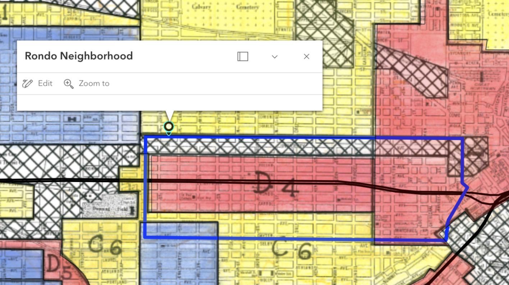
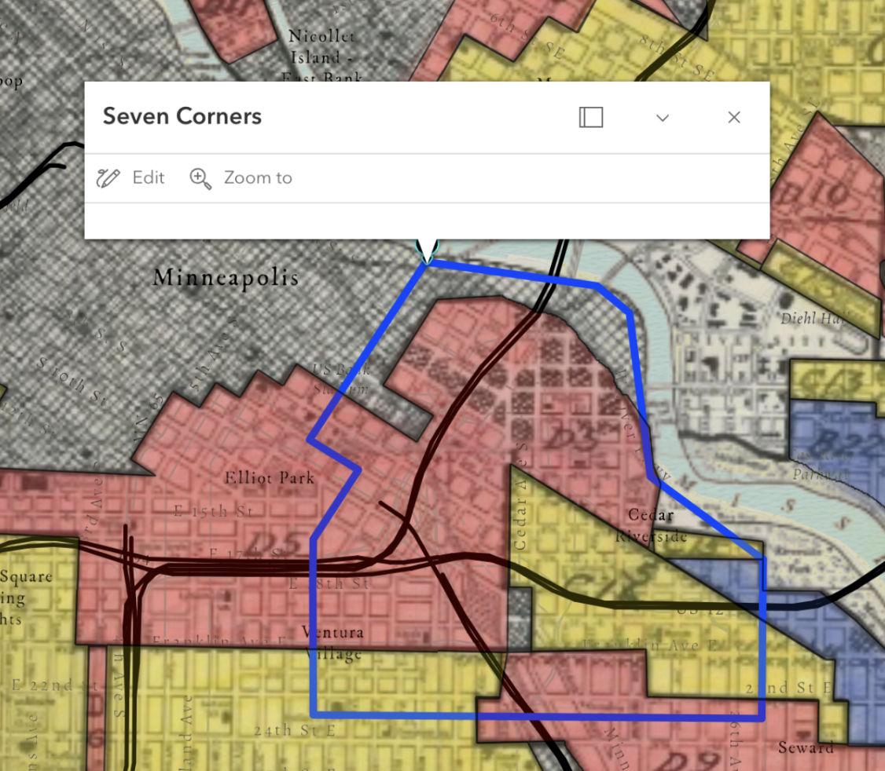

Explore the Interactive Map
The Project
This project blends the work of three projects that investigated the role of redlining in the Twin Cities:
Historic Redline: Investigating the influence of historic redlining on modern day educational and income levels in Minneapolis, Minnesota
Ramsey Redline: Mapping the relationship between historically minority populous neighborhoods (Redline map) and modern public transit lines to explore disruptive public transit. This map is inspired by and will feature a boundary highlighting the historic Rondo Neighborhood.
The Blueline, The Greenline, The Redline: To map the relationship between historically redlined regions, current racial trends in those communities, and access to public transportation to identify regions of transit deserts.
The following covers analysis and results from all above projects.
Research in Context & Methodology
This project introduces transit lines (specifically light rails) and highway constructions atop a layer on historically redlined and predominant minority (in this case, Black) neighborhoods. As of 2023, an estimated 114,000 to 167,000 vehicles drive through i-94 per day, with some estimates approximating up to 220,000 vehicles drive through i-35W daily. Their intersection, near the heart of downtown Minneapolis, is at the center of a formally redlined district, and the current site of one of the most densely populated minority and immigrant communities between both counties (Cedar-Riverside/7 Corners).
The history of the Rondo Neighborhood is not unknown, nor is the story unordinary. The construction of the i-94 highway demolished a growing, cultural epicenter for Black Americans in the Midwest, and the ramifications have been felt ever since.
Interestingly, many articles reference the cost-of-living crisis as a public health issue (globally and domestically) more often than as an economic issue. This is supported by numerous studies over decades on the impacts of income inequality on health and wellness, and the effect of economic disparity for some impacting the broader economic well-being of a larger population; even if not felt as early or for as long, all people in any community will feel the ramifications of some living in insecurity.

Establishing the Data
First, the EPI Family Budget
dataset was downloaded and cleaned, reduced to just the minimum expected annual budget for a single individual (ie no dependents/children),
and GEOID's that matched Minneapolis and Saint Paul.
From there, the most recent income data
from the U.S. Census was matched by GEOID to the EPI individual budget table. Both datasets were imported into ArcGIS Pro
and joined into one table, along with USA county and state boundaries from ESRI Living Atlas.
2022 Census Tracts differ from the historical mapping boundaries, and many were coded as having more than one HOLC grade. To account for each tract’s variability, binary variables were created for each category (A, B, C, and D). This binary was then quantified based on historical classification, and a new score was calculated to re-categorize each modern-dat tract: Very High (D), High (C), Medium (B), and Low (A).
To see a full list of the data and layers used, refer to the end of the page and explore the interactive map
Visualizations and Results
The EPI budget calculator takes into account the cost of transportation, child care, taxes, food, housing, and health care. From pure observation, there isn’t a clear correlation pattern – some red counties (high cost of living, low income) are directly next to blue counties (low costs of living and high income). Patterns don’t follow rural versus urban environments, state or county political affiliation, or even clear and strong racial demographic concentrations (one hypothesis was counties with present and active Indigenous Reservations but there was some difficulty placing this spatial data within this map)

The most interesting part of this mapping project is the pattern that appears with each highway path and junction. It’s important to note that the Black Neighborhood classification boundaries in blue aren’t singularly the only black neighborhoods in this map, just that the populations in these neighborhoods has sustained the predominance of their racial composition. The story of where other low-income or communities of color clustered is shown by the redlining map itself.
Redline Scores, Education, and Poverty
Early iterations of this project sought to find associations between historically redlined neighborhoods and modern poverty and educational attainment metrics. Using the same data sources, the following results were found by creating regression models using R.
Results
Educational Attainment
The model showed higher odds of lower educational attainment (categories "D" and "C") in areas with higher redlining scores. As redlining scores increase, individuals are significantly more likely to have no high school diploma or just a high school diploma.* Overall, redlined areas have higher rates of lower educational attainment and significantly lower rates for advanced degrees.**
*For each one-unit increase in redlining score, the odds of having only a High school diploma are multiplied by 19.21.
**In historically redlined areas, there is a 12.335 percentage point decrease in the average proportion of individuals with
professional degrees.
Poverty
'High poverty' in the model and visualization is categorized as tracts where greater than 20% of the population lives in poverty (as per Minnesota's designation of'high-poverty' areas). The model found that as redlining scores increase, poverty rates tend to rise substantially.* At baseline, the research found that areas with the lowest redlining scores (largely historically A and B ratings) have an average poverty rate of ~3.97%. This is significantly lower than state and national averages (MN: ~9% as of 2019, US: ~11% as of 2022), though research indicates there are significant differences based on location across the entirety of the state.
*For each one-unit increase in redlining score, the poverty rate increases by ~22.22 percentage points.
Reflections
Despite strong correlations between historically redlined neighborhoods in the Twin Cities with both poor transit access and poorer predictors for socio-economic standing, it is not the sole indicator for poverty. Other systemic and public health related issues are to be considered when investigating social and racial class disparities in the Twin Cities (see: Minnesota Paradox)
Future Iterations
This project, despite sweeping, has the potential for more comprehensive exploration. These maps don't take into account areas with high levels of income disparity. Many of the highest metropolitan cities are within counties that show high levels of both minimum budget and mean income.
New York County (Manhattan), for example, has both the highest concentration of wealth in the US, while being amongst the top 10 for cities with the highest income disparity (1 in 5 New Yorkers live below the poverty line). Because of this, those in the top percent with the most concentrated wealth are likely skewing mean incomes for all of New York County.
Further design for a map that improves upon analysis on the strength of these differences given income disparity would be incredibly more accurate in storytelling, as similar exploration with more cities.
Supporting Literature and Data
Data
US Census ACS 5-year Income and Education Estimates, 2022
University of Richmond’s Mapping Inequality historic redline map of Hennepin County
Recognized Rondo Neighborhood boundaries from articles (Reconnect Rondo)
University of Richmond’s Mapping Inequality historic redline map of Ramsey County
US Census ACS 5-year Income Estimates, 2022
Living Atlas on public transit lines and highways
Literature and Other Projects
Before it was cut in half by I-94, St. Paul’s Rondo was a thriving African-American cultural center (Source)
Rondo Neighborhood & I-94: Overview (Source)
Minnesota GIS Data and Maps (Source)
MN Map Gallery (Source)
Before it was cut in half by I-94, St. Paul’s Rondo was a thriving African-American cultural center (Source)
MNDoT: Background | Rethinking I-94 — Minneapolis to St. Paul (Source)
United States Census Bureau, Minneapolis Poverty Rates by Census Tract
United States Census Bureau, Minneapolis Educational Attainment Data by Census Tract
The “Minnesota Paradox” (Myers Jr., S)
Long Shadow of Racial Discrimination: Evidence from Housing Covenants of Minneapolis (Sood, A) (2019)
Race, Risk, and The Emergence of Federal Redlining (Fishback, P) (2020)
A 'Forgotten History' Of How The U.S. Government Segregated America (Gross, T) (2017)